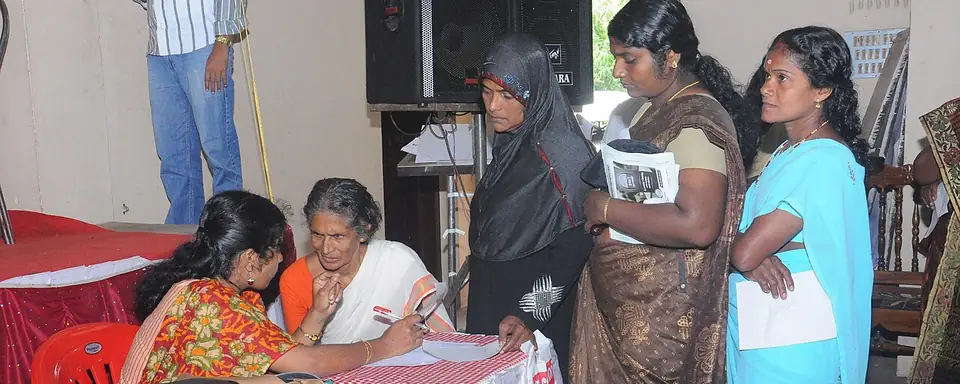
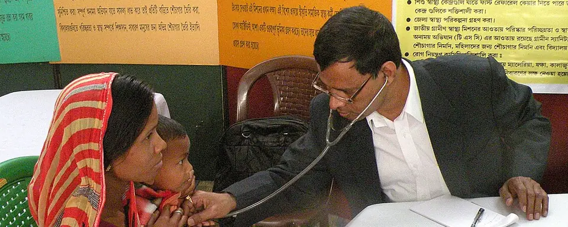
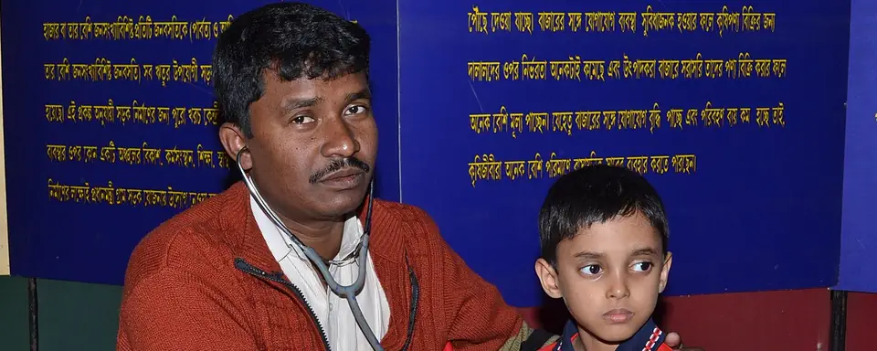

सामान्य रोग
बुखार, सर्दी-जुकाम और खाँसी की जाँच, दवा व सही सलाह — और पथरी का इलाज।
- बुखार
- सर्दी-जुकाम
- खाँसी
- पथरी
डॉ. राजू के साथ
इस बारे में पूछेंडॉ. राजू क्लिनिक · करहा, मऊ
Your own doctors, right here in Karha.
त्वचा रोग, बुखार-सर्दी-खाँसी, प्रसूति एवं स्त्री रोग और खतना का इलाज — एक ही छत के नीचे।
हमारी सेवाएँ
आपके और आपके परिवार की रोज़मर्रा की स्वास्थ्य ज़रूरतों के लिए — अपने ही क्षेत्र में।

बुखार, सर्दी-जुकाम और खाँसी की जाँच, दवा व सही सलाह — और पथरी का इलाज।
डॉ. राजू के साथ
इस बारे में पूछेंखाज-खुजली, एक्जिमा, दाद, फोड़ा-फुन्सी जैसे त्वचा रोगों की सही जाँच और इलाज।
डॉ. राजू के साथ
इस बारे में पूछें
प्रसूति (डिलीवरी) सहित स्त्री रोग संबंधी सभी रोगों का इलाज।
डॉ. शबाना के साथ
इस बारे में पूछें
क्लिनिक में खतना भी किया जाता है। कोई सवाल हो तो आने से पहले फ़ोन करके पूछ लें।
डॉ. राजू के साथ
इस बारे में पूछेंहमारे डॉक्टर
बताइए, आप किस समस्या के लिए आए हैं — सही डॉक्टर और ज़रूरी तैयारी यहाँ देखें।
आप किस समस्या के लिए आए हैं?
सामान्य रोग एवं त्वचा चिकित्सा
सेवाएँ
प्रसूति एवं स्त्री रोग
सेवाएँ
गैलरी
हमारी सेवाओं की एक झलक — त्वचा व घाव, स्त्री रोग व प्रसूति, रोज़मर्रा की बीमारियाँ और खतना।
15 तस्वीरें
हमारे अपने मरीज़ों की निजता के लिए उनके चेहरे धुँधले किए गए हैं या दिखाए नहीं गए। बाकी तस्वीरें भारत में स्वास्थ्य सेवा की खुले लाइसेंस वाली फ़ोटो हैं; ये इस क्लिनिक के मरीज़ नहीं हैं।
आपकी विज़िट
करहा में चन्नर कबाड़ के पास, मस्जिद वाली गली में — या नक्शे पर सीधा रास्ता पाएँ।
अपनी तकलीफ़ खुलकर बताएँ; पुरानी पर्चियाँ और रिपोर्ट साथ लाएँ।
बीमारी, दवाइयों और आगे की देखभाल के बारे में साफ़-साफ़ जानकारी लें।
क्लिनिक का पता
पता
डॉ. राजू क्लिनिकचन्नर कबाड़ के सामने, मस्जिद वाली गली मेंकरहा, मऊ, उत्तर प्रदेश – 276403गूगल प्लस कोड
सही जगह पहुँचने के लिए इसे गूगल मैप्स में डालें।
क्लिनिक का समय
मिलने का समय · दोपहर 2 बजे – शाम 6 बजे
आने से पहले फ़ोन करके पुष्टि कर लें।
फ़ोन / WhatsApp
+91 96165 70486करहा, मऊ
ज़रूरी जानकारी
जो आप ढूँढ रहे हैं वह नहीं मिला? क्लिनिक आइए — हम मदद के लिए तैयार हैं।
क्लिनिक करहा (ज़िला मऊ, उत्तर प्रदेश – 276403) में, चन्नर कबाड़ के सामने, मस्जिद वाली गली में है। हमारा गूगल प्लस कोड 7MQ5X989+MPR है — इसे गूगल मैप्स में डालकर सीधा रास्ता पाएँ।
मिलने का समय दोपहर 2 बजे से शाम 6 बजे तक है। आने से पहले फ़ोन करके पुष्टि कर लें।
त्वचा रोग (खाज-खुजली, एक्जिमा, दाद, फोड़ा-फुन्सी आदि), बुखार, सर्दी-खाँसी, पथरी, प्रसूति एवं स्त्री रोग, और खतना।
जी हाँ, डॉ. राजू द्वारा क्लिनिक में खतना भी किया जाता है। कृपया बच्चे के माता-पिता या अभिभावक के साथ आएँ, और कोई सवाल हो तो पहले फ़ोन कर लें।
क्लिनिक में डॉ. राजू (सामान्य रोग, त्वचा रोग एवं खतना) और डॉ. शबाना (प्रसूति एवं स्त्री रोग) परामर्श देते हैं।
गर्भावस्था, डिलीवरी और महिला रोगों के लिए डॉ. शबाना से परामर्श लिया जा सकता है।
पुरानी पर्चियाँ, जाँच रिपोर्ट, चल रही दवाइयों के नाम और किसी एलर्जी की जानकारी साथ रखें।
गंभीर आपात स्थिति (जैसे साँस लेने में बहुत तकलीफ़, तेज़ रक्तस्राव या बेहोशी) में तुरंत 112 पर कॉल करें या नज़दीकी अस्पताल पहुँचें।
त्वचा रोग · सामान्य रोग · प्रसूति व स्त्री रोग · खतना